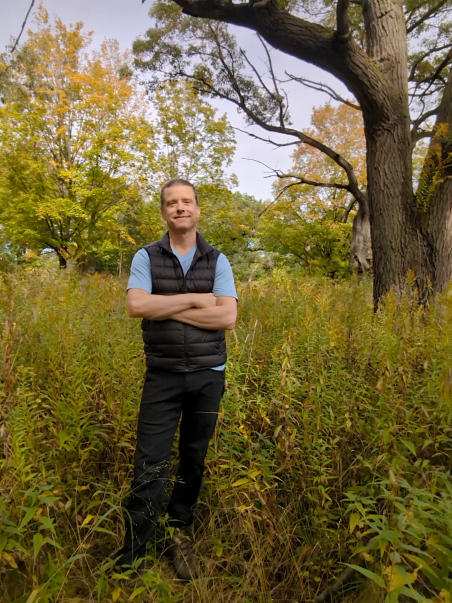

My path into psychotherapy grew out of my own experience of therapy, decades of contemplative practice, and a longstanding curiosity about what helps people heal, change, and become more fully themselves. I’ve practiced meditation for more than 30 years, including within Zen and Tibetan Buddhist traditions.
Before becoming a therapist, my life took me through a number of different worlds. I worked with environmental organizations, lived off-grid in the mountains of British Columbia, travelled through Central America, Mexico and India, and eventually returned to Toronto. Music has been another constant in my life. I’ve been a drummer since my teens, drawn especially to improvisation and to the kind of listening, openness and connection that can emerge when people create something together.
I completed my psychotherapy training at the Gestalt Institute of Toronto, following earlier studies at The Living Institute. My approach is relational, somatic and mindfulness-informed. I bring warmth, curiosity and honest presence to the therapy room, creating a space where you can slow down, become more aware of your experience, and explore what may be happening beneath the surface. My practice is inclusive, and I welcome people from a wide range of backgrounds, identities and life experiences.
I work with people navigating anxiety, depression, grief, shame, addiction, trauma, relationship difficulties, loneliness and life transitions. For me, therapy is about more than reducing symptoms. It can be a way of understanding your own story more deeply, recognizing the patterns that shape your life and relationships, and reconnecting with parts of yourself that may have been pushed aside. From there, new possibilities can emerge for how you relate to yourself, to others, and to the life you want to live.
